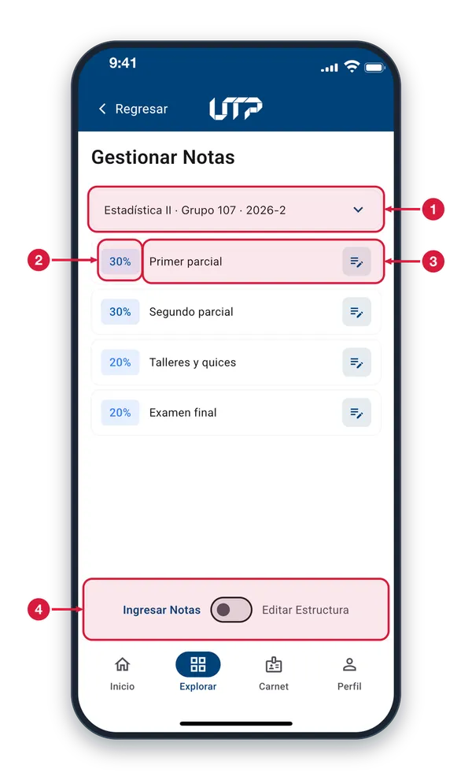
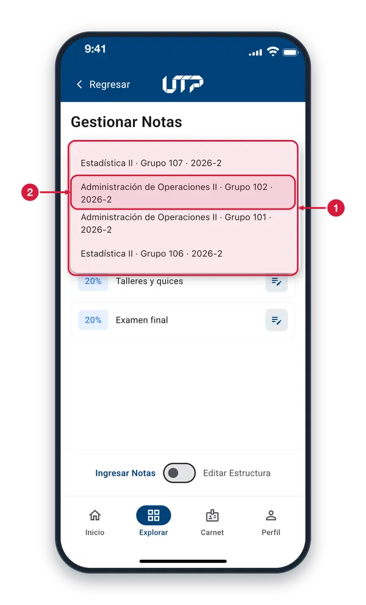
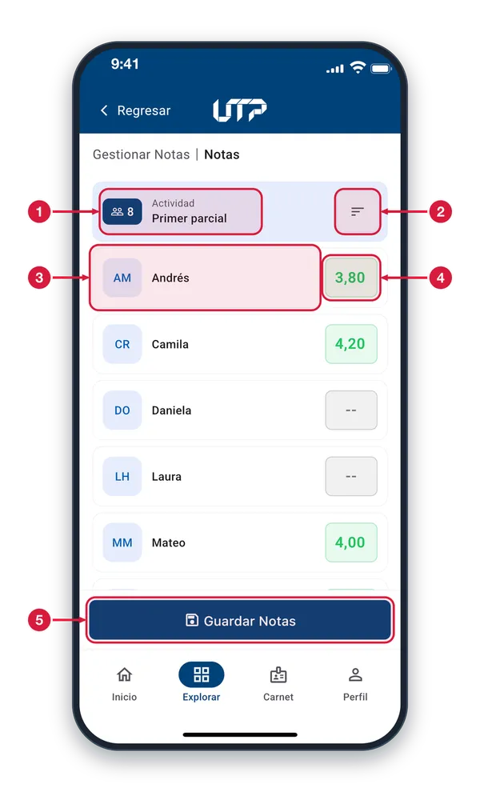
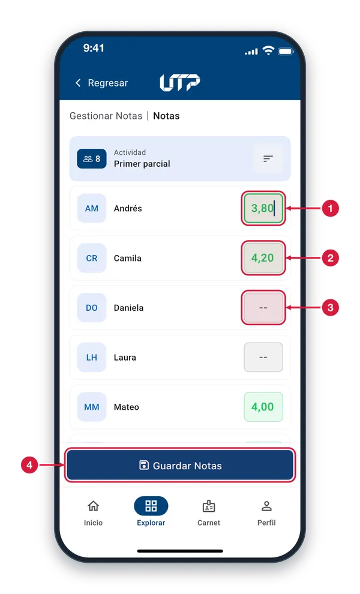
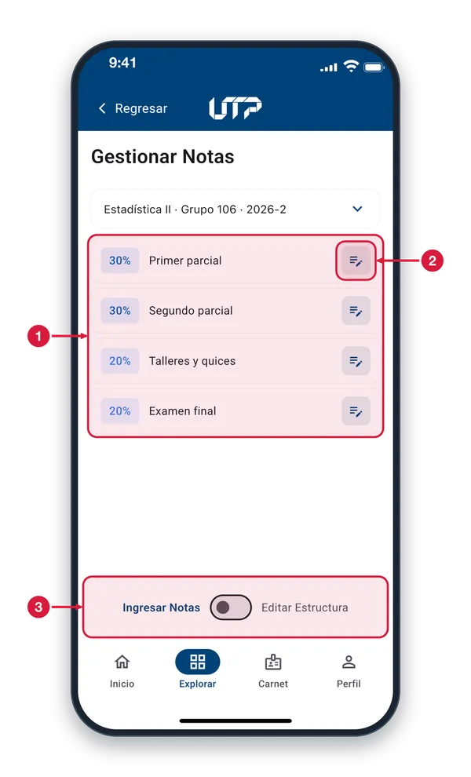
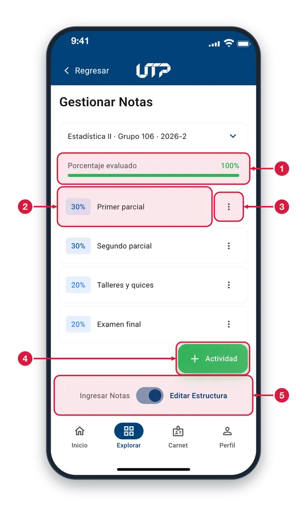
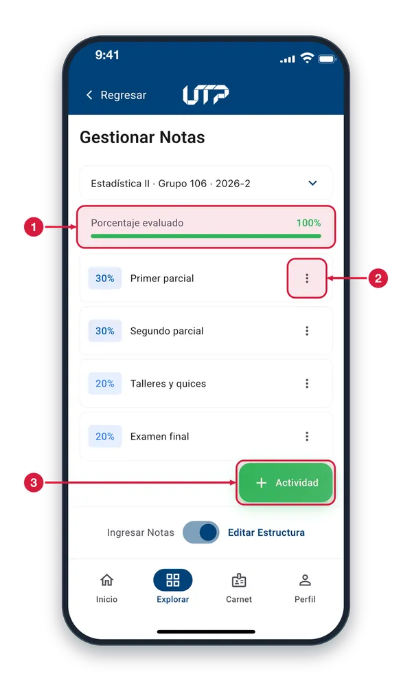
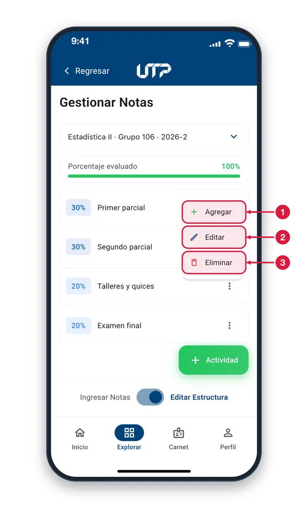
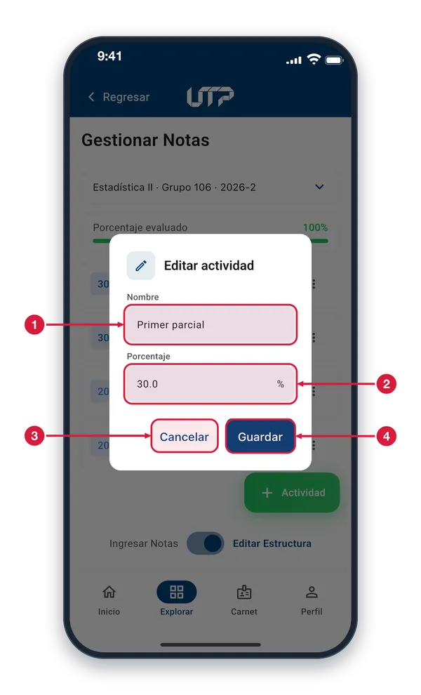

Módulo exclusivo para docentes: ingresa y modifica las calificaciones parciales de tus estudiantes y gestiona la estructura de actividades y porcentajes.
El módulo de Editar Notas cuenta con:
Selección de curso (materia y grupo) desde un menú desplegable
Árbol de actividades evaluativas con porcentajes
Ingreso de la nota de cada estudiante con validación (0 a 5.0)
Modo «Editar Estructura» para crear, editar y eliminar actividades
Botón «Guardar Notas» para confirmar los cambios
Solo podrás ver y hacer uso del módulo EDITAR NOTAS cuando te loguees en la aplicación
EDITAR NOTAS · INGRESAR NOTAS
Gestionar Notas1 de 4
Eliges un curso y ves sus actividades de evaluación con su porcentaje. Entras desde Explorar > Editar Notas.

Selector de curso Muestra el curso que estás gestionando: materia, grupo y periodo. Tócalo para ver todos tus cursos y cambiar de uno a otro.
Porcentaje Cuánto vale la actividad dentro de la nota del curso. El porcentaje se reparte entre todas las actividades hasta completar el 100 %.
Actividad Toca una actividad para ingresar las notas de tus estudiantes; el icono de lápiz de la derecha lo indica. Las demás actividades funcionan igual.
Modo de trabajo Cambia entre «Ingresar Notas» (el modo activo, resaltado) para calificar y «Editar Estructura» para cambiar las actividades. Solo aparece en los cursos donde puedes calificar.
Cambiar de curso2 de 4
Al tocar el selector se despliega la lista de tus cursos; elige uno para ver su estructura de notas.

Lista de cursos Cada opción es un curso, con su materia, grupo y periodo. Toca uno para cargar sus actividades; si tocas fuera de la lista, se cierra sin cambiar de curso.
Un curso de la lista Los nombres largos se parten en dos líneas. Al elegir un curso, las actividades de abajo se reemplazan por las de ese curso.
Notas de una actividad3 de 4
Aquí calificas a tus estudiantes en la actividad elegida. Se abre al tocar una actividad en Gestionar Notas.

Actividad y estudiantes El número del recuadro azul indica cuántos estudiantes hay para calificar; a su lado está el nombre de la actividad que estás calificando.
Ordenar Abre un menú para ordenar la lista de estudiantes por nombre o por apellido.
Estudiante Foto (o iniciales) y nombre de cada estudiante. Las demás filas funcionan igual.
Campo de nota Toca el campo para escribir la nota del estudiante. «--» significa que todavía no tiene nota.
Guardar Notas Guarda las notas de todos los estudiantes de la lista. Al terminar aparece «Notas guardadas correctamente».
Escribir una nota4 de 4
Toca el campo de un estudiante y escribe su nota con el teclado numérico; se valida de 0 a 5.

Campo de nota Escribe la nota de 0 a 5, con hasta dos decimales; el punto se cambia por coma. Si el valor no es posible, no se acepta y aparece el aviso «La nota debe estar entre 0 y 5».
Color de la nota Con la nota escrita, el campo se colorea: verde desde 3,0; ámbar desde 2,0 hasta menos de 3,0; rojo por debajo de 2,0.
Sin nota «--» es un campo vacío. Si borras lo escrito, el estudiante queda sin nota; no se toma como un cero.
Guardar Notas Cuando termines, toca aquí para guardar las notas de toda la lista. Si sales antes, la app te avisa que perderás los cambios sin guardar.
EDITAR NOTAS · EDITAR ESTRUCTURA
Actividades para calificar1 de 5
Con «Ingresar Notas» activo, cada actividad con icono de lápiz se puede calificar tocándola.

Actividades Cada fila es una actividad con su porcentaje. Si una se divide en subactividades, muestra cuántas tiene y cuánto porcentaje falta; en ese caso se califica cada subactividad.
Icono de lápiz Indica que puedes ingresar las notas de esa actividad. Toca la fila y se abre la lista de estudiantes con su nota (pantalla «Notas»).
Ingresar Notas El modo «Ingresar Notas» está resaltado y sirve para calificar. Para cambiar las actividades, desliza el interruptor hacia «Editar Estructura».
Editar la estructura2 de 5
Con «Editar Estructura» puedes agregar, cambiar y eliminar actividades y sus porcentajes.

Porcentaje evaluado Suma de los porcentajes de las actividades. Se pinta en verde al completar el 100 %; si falta, se ve en ámbar y la barra no se llena.
Actividad Porcentaje y nombre de cada actividad. En este modo, tocar la fila no abre las notas: usa el menú de los tres puntos.
Menú de la actividad Los tres puntos abren las opciones Agregar, Editar y Eliminar de esa actividad. Las demás actividades funcionan igual.
Botón Actividad Agrega una actividad nueva al curso: te pide nombre y porcentaje, y no deja pasarte del 100 %.
Modo Editar Estructura «Editar Estructura» está resaltado. Desliza el interruptor hacia «Ingresar Notas» para volver a calificar.
Porcentaje completo3 de 5
Cuando las actividades ya completan el 100 %, el botón «Actividad» no abre el formulario y muestra un aviso.

Porcentaje evaluado Marca el 100 %: la barra está llena y el número en verde. No queda porcentaje por repartir entre actividades nuevas.
Menú de la actividad Para liberar porcentaje, abre el menú de una actividad y elige Editar para bajar su valor, o Eliminar para quitarla.
Botón Actividad Con el 100 % completo, al tocarlo aparece el aviso «Ya se alcanzó el 100% del porcentaje» y no se abre el formulario.
Opciones de una actividad4 de 5
Los tres puntos de una actividad abren un menú para agregarle una subactividad, editarla o eliminarla.

Agregar Crea una subactividad dentro de esta actividad: te pide su nombre y su porcentaje.
Editar Abre el formulario «Editar actividad» con el nombre y el porcentaje actuales para que los cambies.
Eliminar Pide confirmación y, si aceptas, quita la actividad y sus subactividades. Las notas de los estudiantes en ellas dejan de mostrarse.
Editar actividad5 de 5
Formulario para cambiar el nombre y el porcentaje de una actividad. Se abre con «Editar» en su menú.

Nombre Escribe el nuevo nombre de la actividad. Si lo dejas vacío, se guarda como «Sin nombre».
Porcentaje Escribe cuánto vale la actividad: mayor que 0 y hasta 100. Si te pasas del porcentaje disponible, el formulario te muestra cuánto queda.
Cancelar Cierra el formulario sin cambiar nada.
Guardar Valida los datos y guarda el cambio. Si sale bien, el formulario se cierra y la actividad queda actualizada; si falla, el motivo aparece en rojo dentro del formulario.